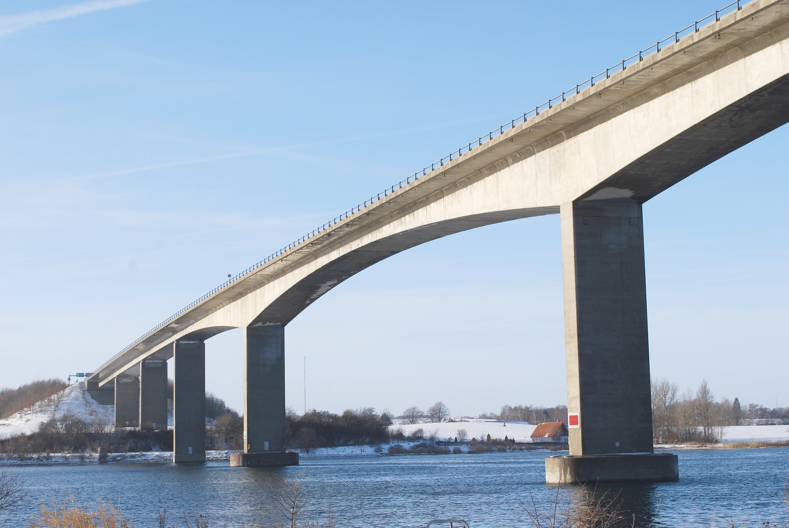
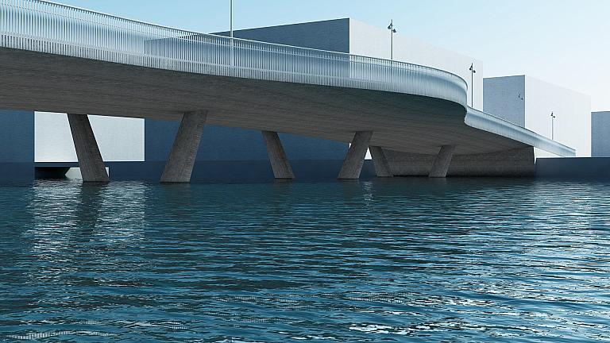
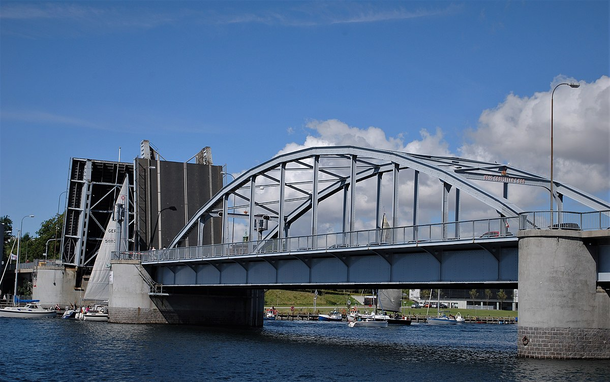
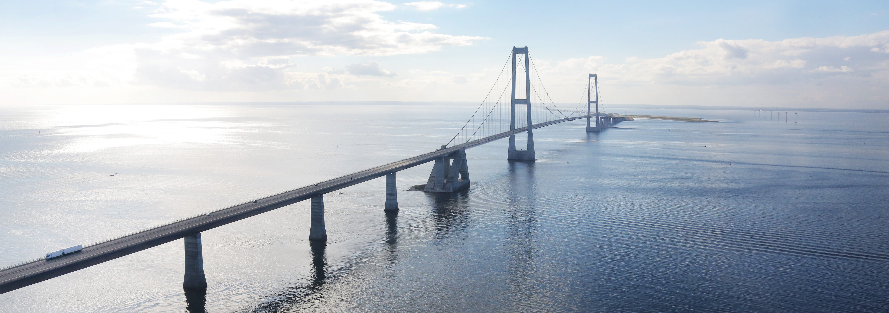

På denne hjemmeside kan du finde informationer omkring broer i Danmark.
|  |  |  |
|

Danmark er et land med mange fantasitiske broer, det er det holder Danmark sammen. Den mest velkendte bro i Danmark er storebælt. Storebælt forbinder Fyn med Sjælland. Fakta om storebælt
|